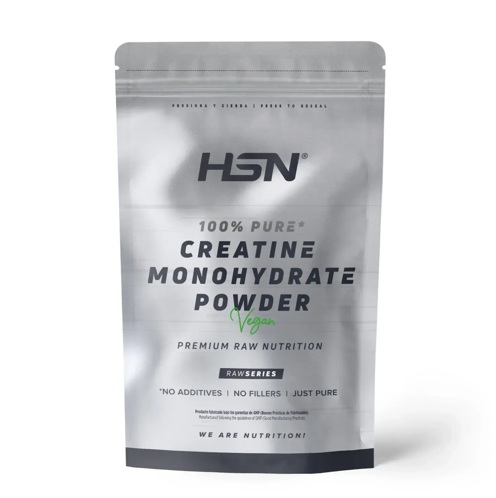
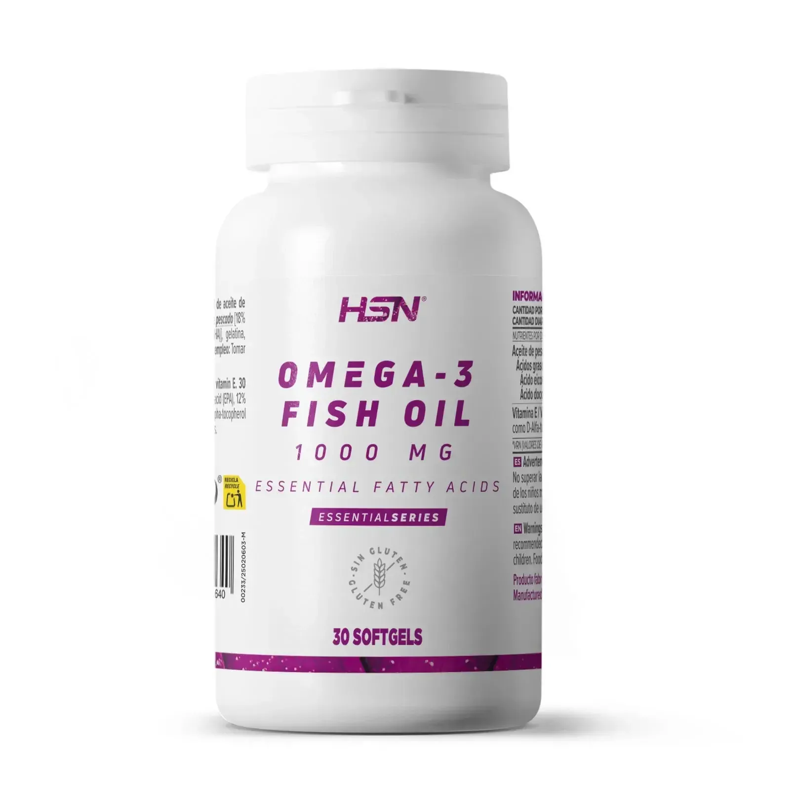
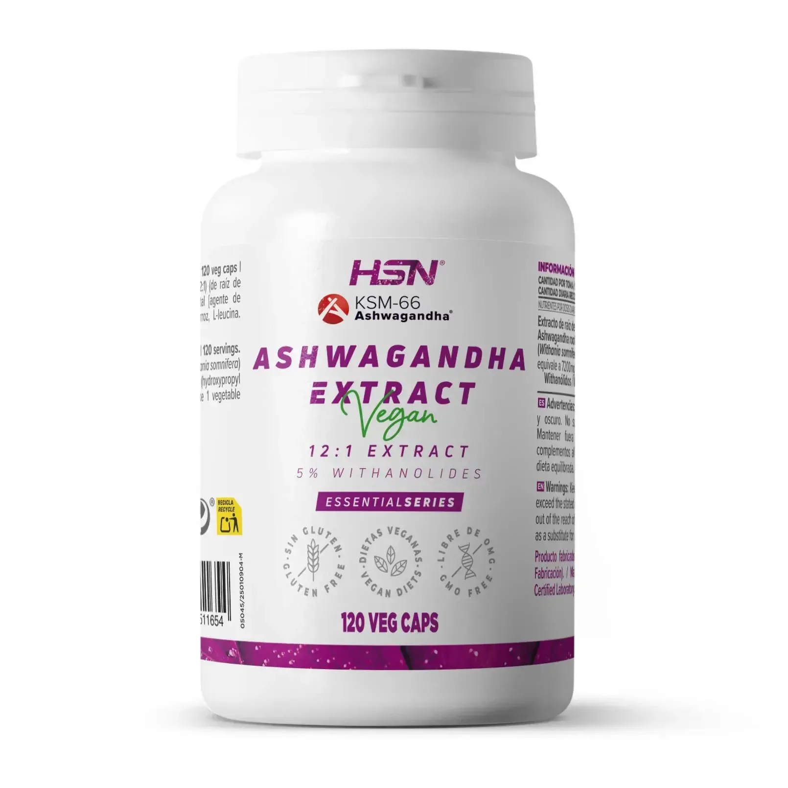
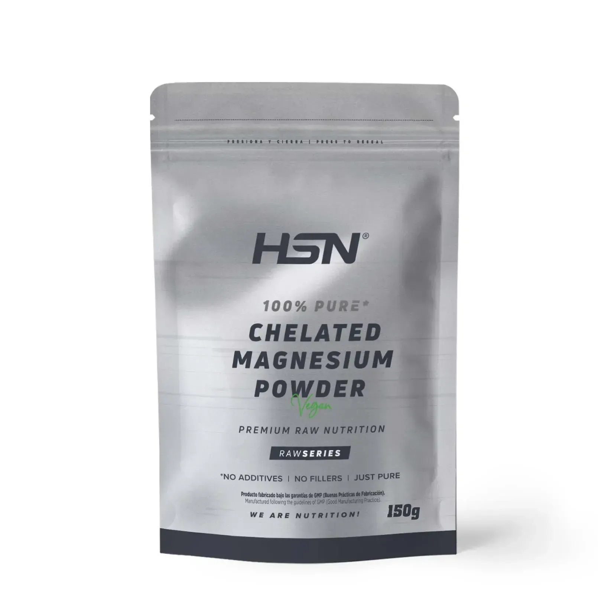
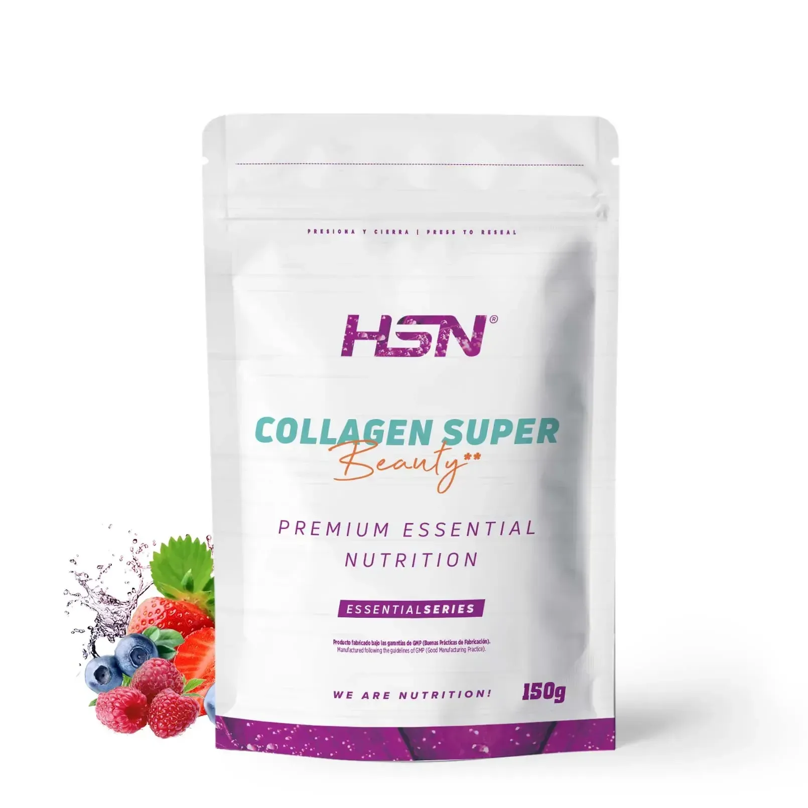
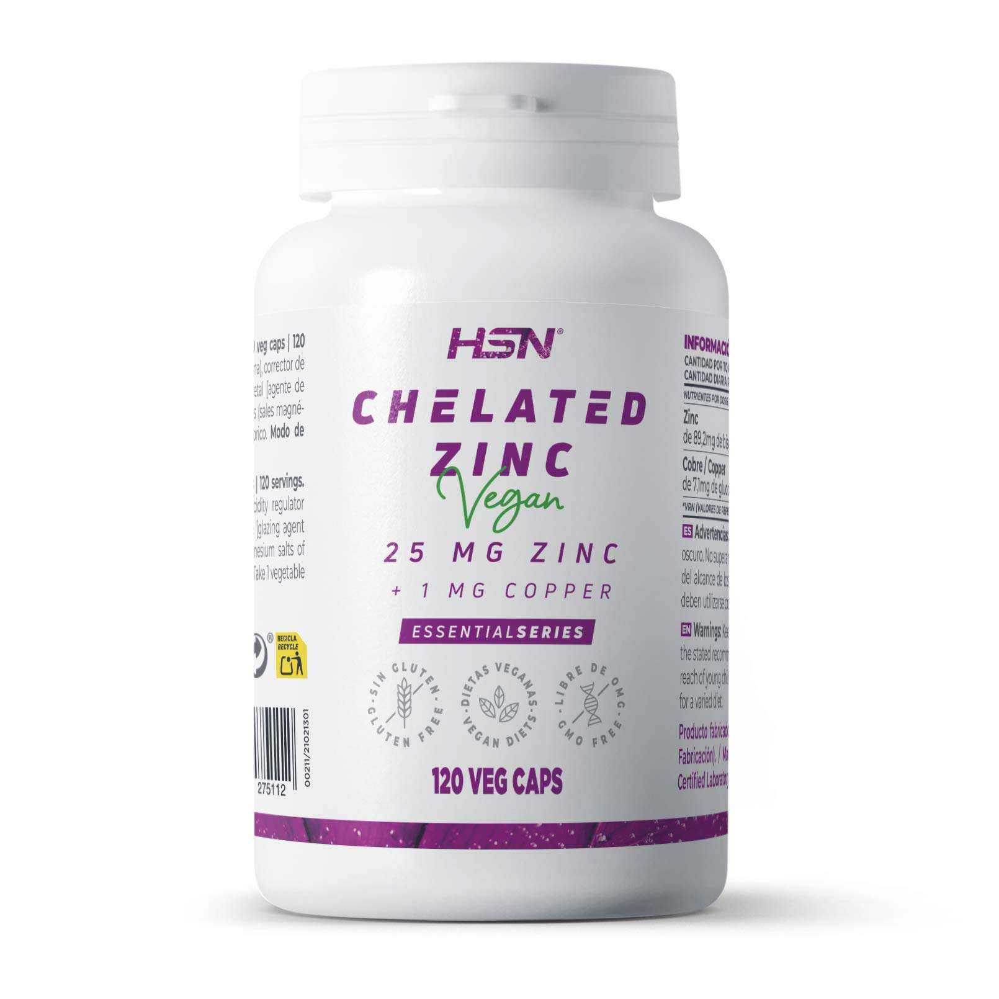

Suplementación
Información basada exclusivamente en estudios científicos actuales para optimizar tu rendimiento y salud.

Creatina Monohidrato
Incrementa las reservas de fosfocreatina muscular, mejorando la producción de ATP, la fuerza y el rendimiento en ejercicios de alta intensidad.
- Posicionamiento Oficial ISSN – Seguridad y Eficacia
- Seguridad a Largo Plazo y Mitos (Estudio Clínico)

Omega-3 (EPA y DHA)
Reduce la inflamación, mejora la salud cardiovascular y favorece la recuperación muscular y articular tras el ejercicio.
- Reducción del Dolor Muscular e Inflamación (DOMS)
- Prevención de Salud Cardiovascular – Estudio Clínico

Vitamina D3
Participa en la función muscular, ósea e inmunológica. Niveles adecuados se asocian con mejor rendimiento y recuperación.
VER EN HSN
Ashwagandha (KSM-66)
Adaptógeno que reduce el cortisol y mejora la fuerza, la masa muscular y la recuperación ante el estrés físico.
- Efecto en la Fuerza y la Recuperación (Estudio KSM-66)
- Reducción de Cortisol y Estrés (Estudio Clínico)

Magnesio (Bisglicinato)
Mineral esencial para la función muscular. El bisglicinato es la forma con mayor absorción y tolerancia digestiva.
- Bisglicinato: Mayor absorción.
- Treonato: Soporte cognitivo.
- Papel del Magnesio en Prevención y Terapia Muscular
- Estudio Comparativo de Biodisponibilidad y Absorción


Zinc y Colágeno
El zinc interviene en la síntesis proteica, mientras que el colágeno refuerza la estructura de tendones y articulaciones.
Preguntas Frecuentes
¿Es obligatorio suplementarse?
No. Los suplementos ayudan a optimizar resultados, pero la base siempre debe ser una dieta equilibrada y un entrenamiento sólido.
¿Son seguros para los riñones?
En personas sanas, suplementos como la creatina no causan daño renal. Es fundamental mantenerse hidratado y, en caso de patologías previas, consultar siempre con un médico.
¿Puedo mezclar varios suplementos a la vez?
Sí, la mayoría son compatibles (como creatina y magnesio). Se recomienda introducirlos de uno en uno para evaluar la tolerancia digestiva individual.